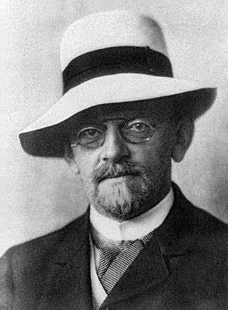
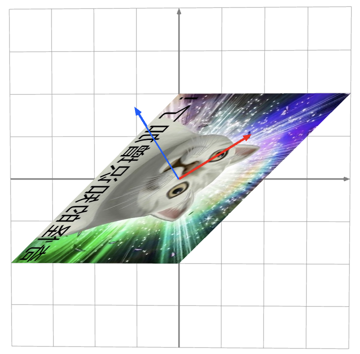

算术、代数与算法
算术 (Arithmetic) 和代数 (Algebra)
小学的 “算术”
- 给一个 “表达式” 和一系列 “等价变换” 规则，求出表达式的值
- $(3 + 4) \times 5 = 7 \times 5 = 35$
- $753 + 672 = 1300 + 120 + 5 = 1425$
中学的 “代数”
- 允许表达式中出现代表某个数值的 “变量”；表达式依然成立
- $x^2 - 2x - 3 = 0 \Rightarrow x\in \{ -1, 3 \}$
为什么 “代数” 比 “算术” 更难？
- 算术的计算过程是确定的——总是朝着 “变简单” 的方向走
- 代数做什么变换 “比较好” 是困难的
- $x^2 - 2x - 3 = 0 \Rightarrow x^2 - 2x + 1 - 4 = 0$
算法 (Algorithm)
“解决问题的方法与步骤。”
和 “算术” 和 “代数” 不同，算法是 “

- “自动 AC 机”
- Hilbert 第十问题：给出一个算法，输入一个整系数多项式 (例如 $x^3 + y^3 = z^3$)，如果有整数解输出 Yes，否则输出 No
- 一段 C++ 代码，输入一个平面几何命题 (例如你们考试的题目)，自动给出一个证明
- ……
本讲内容：线性代数基础
线性算术
- 向量 (vector) 和向量的运算
线性代数
- 从线性算术衍生出的一系列有趣数学对象
线性代数中的算法
- 一些线性代数问题的解法
线性算术
线性算术：向量和向量的运算
向量 (vector): 一个 $n$ 维的数组，通常
$$ \vec{x} = \begin{bmatrix} 3 \\ 4 \\ 1 \end{bmatrix}\qquad \vec{y} = \begin{bmatrix} 1.5 \\ -2 \end{bmatrix} $$
向量的算术：(加法) 每个维度分别相加；(数乘) 每个维度分别乘以同一个数字
$$ \begin{bmatrix} 3 \\ 4 \\ 1 \end{bmatrix} + \begin{bmatrix} -1 \\ 0 \\ 1.5 \end{bmatrix} = \begin{bmatrix} 2 \\ 4 \\ 2.5 \end{bmatrix}\qquad 3 \begin{bmatrix} 3 \\ 4 \\ 1 \end{bmatrix} = \begin{bmatrix} 9 \\ 12 \\ 3 \end{bmatrix} $$
这似乎也……太简单了吧？
线性算术的直观理解
“一个数组”
“起点是原点的箭头”
“坐标系中的一个点”
为什么是
- 箭头可以分解成箭头的求和
- 数乘可以分配到求和里
线性算术的新运算：线性变换
什么运算 ($\rightarrow$) 可以把一个向量 (箭头) 变成另一个？
- 拉伸
$$ \begin{bmatrix} 0 \\ 0 \end{bmatrix} \textcolor{blue}\rightarrow \begin{bmatrix} 0 \\ 0 \end{bmatrix} \qquad \begin{bmatrix} 1 \\ 0 \end{bmatrix} \textcolor{blue}\rightarrow \begin{bmatrix} 2 \\ 0 \end{bmatrix} \qquad \begin{bmatrix} 2 \\ -1 \end{bmatrix} \textcolor{blue}\rightarrow \begin{bmatrix} 4 \\ -2 \end{bmatrix} $$
- 拉伸 + 旋转
$$ \begin{bmatrix} 1 \\ 0 \end{bmatrix} \textcolor{red}\rightarrow \begin{bmatrix} 3 \\ 4 \end{bmatrix} \qquad \begin{bmatrix} 0 \\ 1 \end{bmatrix} \textcolor{red}\rightarrow \begin{bmatrix} 0 \\ 2 \end{bmatrix} \qquad \begin{bmatrix} 1 \\ 1 \end{bmatrix} = \begin{bmatrix} 1 \\ 0 \end{bmatrix} + \begin{bmatrix} 0 \\ 1 \end{bmatrix} \textcolor{red}\rightarrow \begin{bmatrix} 3 \\ 6 \end{bmatrix} $$
$$ \begin{bmatrix} x \\ y \end{bmatrix} = x \begin{bmatrix} 1 \\ 0 \end{bmatrix} + y \begin{bmatrix} 0 \\ 1 \end{bmatrix} \textcolor{red}\rightarrow x \begin{bmatrix} 3 \\ 4 \end{bmatrix} + y \begin{bmatrix} 0 \\ 2 \end{bmatrix} $$
线性 ：空间中的网格被 “$\rightarrow$” 实现了平行、等距的变换
从 “线性算术” 到 “线性代数”
线性变换
每个坐标轴分别做出的拉伸 + 旋转
- 把 “单位正方形” 变为一个旋转的 “平行四边形”
- 保持所有网格变换后 “平行且等距”
$$ \begin{bmatrix} 1 \\ 0 \end{bmatrix} \textcolor{red}\to \begin{bmatrix} a \\ b \end{bmatrix} \qquad \begin{bmatrix} 0 \\ 1 \end{bmatrix} \textcolor{red}\to \begin{bmatrix} c \\ d \end{bmatrix} \qquad $$
$$ \left( \begin{bmatrix} x \\ y \end{bmatrix} = x \begin{bmatrix} 1 \\ 0 \end{bmatrix} + y \begin{bmatrix} 0 \\ 1 \end{bmatrix} \right) \textcolor{red}\rightarrow x \begin{bmatrix} a \\ b \end{bmatrix} + y \begin{bmatrix} c \\ d \end{bmatrix} $$
所以我们只要考虑 $(0,0)-(1,1)$ 的单位方格 “变成” 了什么
- 其他变换都是 “复制” 的
矩阵与线性变换
如何表示线性变换操作 “$\rightarrow$”？
用 “矩阵” 表示线性变换 - 大家熟悉的定义
$$ \begin{bmatrix} a & c \\ b & d \end{bmatrix} \begin{bmatrix} x \\ y \end{bmatrix} = \begin{bmatrix} ax + cy \\ bx + dy \end{bmatrix} $$
$$ \begin{bmatrix} a & d & g \\ b & e & h \\ c & f & i \end{bmatrix} \begin{bmatrix} x \\ y \\ z \end{bmatrix} = \begin{bmatrix} ax + dy + gz \\ bx + ey + hz \\ cx + fy + iz \end{bmatrix} $$
- 试着计算：WolframAlpha
理解三维 (和高维) 空间的线性变换
$$ \begin{array}{rcl} & & \begin{bmatrix} a & d & g \\ b & e & h \\ c & f & i \end{bmatrix} \begin{bmatrix} x \\ y \\ z \end{bmatrix} \\ & = & \begin{bmatrix} a & d & g \\ b & e & h \\ c & f & i \end{bmatrix} \left( x \begin{bmatrix} 1 \\ 0 \\ 0 \end{bmatrix} + y \begin{bmatrix} 0 \\ 1 \\ 0 \end{bmatrix} + z \begin{bmatrix} 0 \\ 0 \\ 1 \end{bmatrix} \right) \\ & = & x \left( \begin{bmatrix} 1 \\ 0 \\ 0 \end{bmatrix} {\to} \begin{bmatrix} a \\ b \\ c \end{bmatrix} \right) + y \left( \begin{bmatrix} 0 \\ 1 \\ 0 \end{bmatrix} {\to} \begin{bmatrix} d \\ e \\ f \end{bmatrix} \right) + z \left( \begin{bmatrix} 0 \\ 0 \\ 1 \end{bmatrix} {\to} \begin{bmatrix} g \\ h \\ i \end{bmatrix} \right) \\ & = & \begin{bmatrix} ax + dy + gz \\ bx + ey + hz \\ cx + fy + iz \end{bmatrix} \end{array} $$
线性变换：例子
“压缩空间” 的变换
$$ \begin{bmatrix} 0 & 0 \\ 0 & 0 \end{bmatrix} \qquad \qquad \begin{bmatrix} 1 & -1 \\ -2 & 2 \end{bmatrix} \qquad $$
“一一对应” 的变换：旋转 + 缩放
$$ \begin{bmatrix} 1 & 0 \\ 0 & 1 \end{bmatrix} \qquad \begin{bmatrix} 0 & -1 \\ -1 & 0 \end{bmatrix} \qquad \frac{1}{\sqrt2} \begin{bmatrix} 1 & -1 \\ 1 & 1 \end{bmatrix} \qquad \begin{bmatrix} 2 & 1 \\ 3 & 4 \end{bmatrix} $$
“一一对应的变换也有逆变换”
$$ \begin{bmatrix} 1 & 0 \\ 0 & 1 \end{bmatrix} \qquad \begin{bmatrix} 0 & -1 \\ -1 & 0 \end{bmatrix} \qquad \frac{1}{\sqrt2} \begin{bmatrix} 1 & 1 \\ -1 & 1 \end{bmatrix} \qquad \frac{1}{5} \begin{bmatrix} 4 & -3 \\ -1 & 2 \end{bmatrix} $$
试一试 Visualizer 和一张图片
一点矩阵乘法
矩阵的乘法 = 线性变换的 “组合”
$$ \begin{bmatrix} 0 & -1 \\ -1 & 0 \end{bmatrix} \times \begin{bmatrix} 0 & -1 \\ -1 & 0 \end{bmatrix} = \begin{bmatrix} 1 & 0 \\ 0 & 1 \end{bmatrix} $$
$$ \begin{bmatrix} 1 & -1 \\ 1 & 1 \end{bmatrix} \times \begin{bmatrix} 1 & 1 \\ -1 & 1 \end{bmatrix} = \begin{bmatrix} 2 & 0 \\ 0 & 2 \end{bmatrix} $$
$$ \begin{bmatrix} 2 & 1 \\ 3 & 4 \end{bmatrix} \times \begin{bmatrix} 4 & -3 \\ -1 & 2 \end{bmatrix} = \begin{bmatrix} 5 & 0 \\ 0 & 5 \end{bmatrix} $$
先旋转、再拉伸 (从右向左计算)
$$ \begin{bmatrix} 1 & 1 \\ 0 & 1 \end{bmatrix} \left( \begin{bmatrix} 0 & -1 \\ 1 & 0 \end{bmatrix} \begin{bmatrix} x \\ y \end{bmatrix} \right) = \begin{bmatrix} 1 & -1 \\ 1 & 0 \end{bmatrix} \begin{bmatrix} x \\ y \end{bmatrix} $$
用线性变换理解矩阵运算
$$ \begin{bmatrix} 1 & 1 \\ 0 & 1 \end{bmatrix} \left( \begin{bmatrix} 0 & -1 \\ 1 & 0 \end{bmatrix} \begin{bmatrix} x \\ y \end{bmatrix} \right) = \begin{bmatrix} 1 & -1 \\ 1 & 0 \end{bmatrix} \begin{bmatrix} x \\ y \end{bmatrix} $$
矩阵乘法 = 线性变换的 “叠加” (从右向左)
- 通常 $AB \ne BA$
- 先拉伸再旋转 → 单位方格变成 “挤压” 的平行四边形
- 先旋转再拉伸 → 单位方格变成 “撑开” 的平行四边形
- $(AB) x = A(Bx)$
- $A^{-1} A x = x$
- $(ABC)^{-1} = C^{-1}B^{-1}A^{-1}$
- 通常 $(A+B)^{-1} \ne A^{-1} + B^{-1}$
Fibonacci 数列
$f_0 = 0, f_1 = 1, f_n = f_{n-1} + f_{n-2}$
矩阵乘法可以表示一组数字的任意 “线性” 运算
- “坐标轴变换的多次叠加”
$$ \begin{array}{rcl} \begin{bmatrix} f_{n+1} \\ f_{n} \end{bmatrix} & = & \begin{bmatrix} 1 & 1 \\ 1 & 0 \end{bmatrix} \begin{bmatrix} f_{n} \\ f_{n-1} \end{bmatrix} \\ & = & \begin{bmatrix} 1 & 1 \\ 1 & 0 \end{bmatrix}^n \begin{bmatrix} f_{1} \\ f_{0} \end{bmatrix} \end{array} $$
借助矩阵的特殊性，利用 “特征多项式” 可以实现 $O(k^2\log n)$ 甚至 $O(k \log k \log n)$ 的常系数线性递推关系求解
高斯消元法
方程组与线性变换
矩阵定义了线性变换
$$\begin{bmatrix} 1 & 1 \\ 1 & 0 \end{bmatrix}$$
给定 “变换后” 的一个点，能否求出变换前的点？
$$ \begin{bmatrix} 1 & 1 \\ 1 & 0 \end{bmatrix} \begin{bmatrix} x \\ y \end{bmatrix} = \begin{bmatrix} 13 \\ 8\end{bmatrix} $$
这就是大家熟悉的 “方程组”！
- 假设线性变换 $A$ 没有 “把平面降维” (压缩成直线/点)
$$A \vec x = \vec b \Rightarrow \vec x = A^{-1} b$$
逆线性变换：理解
任给两个不共线的向量，都可以去 “表示” 出平面上任意一个向量
- “表示” 的过程就是矩阵的逆
$$ A = \begin{bmatrix} 2 & -1 \\ 3 & 1 \end{bmatrix} $$
$$ \begin{array}{rcl} \begin{bmatrix} x \\ y \end{bmatrix} & = & \displaystyle \frac{x+y}{5} \cdot \begin{bmatrix} 2 \\ 3 \\ \end{bmatrix} + \frac{-3x+2y}{5} \cdot \begin{bmatrix} -1 \\ 1 \\ \end{bmatrix} \\ & = & \displaystyle \frac{1}{5} \begin{bmatrix} 1 & 1 \\ -3 & 2 \\ \end{bmatrix} \begin{bmatrix} 2 & -1 \\ 3 & 1 \\ \end{bmatrix} \begin{bmatrix} x \\ y \\ \end{bmatrix} \end{array} $$
高斯消元法
$$ \left\{ \begin{matrix} x & + & y & = & 10 \\ 2x & + & 4y & = & 32 \\ \end{matrix} \right. $$
对方程组的 “等价变换”
- 将方程组左右都乘以某一非零整数
- 将两个方程组对应相加 (相减)
$$ \left\{ \begin{matrix} 2x & + & 2y & = & 20 \\ 2x & + & 4y & = & 32 \\ \end{matrix} \right. \qquad \left\{ \begin{matrix} 2x & + & 2y & = & 20 \\ & + & 2y & = & 12 \\ \end{matrix} \right. $$
$$ \left\{ \begin{matrix} 2x & + & & = & 8 \\ & + & 2y & = & 12 \\ \end{matrix} \right. \qquad \left\{ \begin{matrix} x & + & & = & 4 \\ & + & y & = & 6 \\ \end{matrix} \right. $$
高斯消元法：一步一步拉直坐标轴；顺便求逆
$$ \begin{bmatrix} 1 & 1 \\ 2 & 4 \end{bmatrix} \begin{bmatrix} x \\ y \end{bmatrix} = \begin{bmatrix} 10 \\ 32 \end{bmatrix} $$
$$ \begin{bmatrix} 2 & 0 \\ 0 & 1 \end{bmatrix} \begin{bmatrix} 1 & 1 \\ 2 & 4 \end{bmatrix} \begin{bmatrix} x \\ y \end{bmatrix} = \begin{bmatrix} 20 \\ 32 \end{bmatrix} $$
$$ \begin{bmatrix} 1 & 0 \\ -1 & 1 \end{bmatrix} \begin{bmatrix} 2 & 0 \\ 0 & 1 \end{bmatrix} \begin{bmatrix} 1 & 1 \\ 2 & 4 \end{bmatrix} \begin{bmatrix} x \\ y \end{bmatrix} = \begin{bmatrix} 20 \\ 12 \end{bmatrix} $$
$$ \begin{bmatrix} 1 & -1 \\ 0 & 1 \end{bmatrix} \begin{bmatrix} 1 & 0 \\ -1 & 1 \end{bmatrix} \begin{bmatrix} 2 & 0 \\ 0 & 1 \end{bmatrix} \begin{bmatrix} 1 & 1 \\ 2 & 4 \end{bmatrix} \begin{bmatrix} x \\ y \end{bmatrix} = \begin{bmatrix} 8 \\ 12 \end{bmatrix} $$
$$ \color{red} \begin{bmatrix} 2 & 0 \\ 0 & 2 \end{bmatrix} \begin{bmatrix} x \\ y \end{bmatrix} = \begin{bmatrix} 8 \\ 12 \end{bmatrix} $$
一点点算法
物理世界中的线性系统
矩阵 = 线性变换 = 物理世界中的一个步骤
- Fibonacci 数列
$$ \begin{bmatrix} f_{n+1} \\ f_{n} \end{bmatrix} = \begin{bmatrix} 1 & 1 \\ 1 & 0 \end{bmatrix} \begin{bmatrix} f_{n} \\ f_{n-1} \end{bmatrix} $$
- 图的邻接矩阵
- 流网络
- ……
线性代数与物理世界的联系
- $A^n$ ($n\to\infty$) 的性质代表 “无限重复” 做一件事的特征
例子：线性方程组的迭代求解
“贪心法”：每次都使我们离方程的解近一点
$$ \left\{ \begin{matrix} x & + & y & = & 10 \\ 2x & + & 4y & = & 32 \\ \end{matrix} \right. \qquad \left\{ \begin{matrix} x' = 10 - y \\ y' = 8 - x/2 \\ \end{matrix} \right. $$
$$ \begin{bmatrix} x' \\ y' \\ 1 \end{bmatrix} = \begin{bmatrix} 0 & -1 & 10 \\ -1/2 & 0 & 8 \\ 0 & 0 & 1 \end{bmatrix} \begin{bmatrix} x \\ y \\ 1 \end{bmatrix} $$
- 添加一个 1 的维度是计算机图形学中非常常见的技巧
$$ \begin{bmatrix} 1 \\ 1 \end{bmatrix} {\to} \begin{bmatrix} 9 \\ 7.5 \end{bmatrix} {\to} \begin{bmatrix} 2.5 \\ 3.5 \end{bmatrix} {\to} \begin{bmatrix} 6.5 \\ 6.75 \end{bmatrix} {\to} \begin{bmatrix} 3.25 \\ 4.75 \end{bmatrix} {\to} \ldots \to \begin{bmatrix} 3.997 \\ 5.995 \end{bmatrix} $$
$A^n$ 里的宝藏
迭代法的成功不是偶然的
$$ \begin{bmatrix} 0 & -1 & 10 \\ -1/2 & 0 & 8 \\ 0 & 0 & 1 \end{bmatrix}^\infty = \begin{bmatrix} 0 & 0 & 4 \\ 0 & 0 & 6 \\ 0 & 0 & 1 \end{bmatrix} $$
有些线性变换可以表达成 “旋转” - “伸缩” - “逆旋转”
$$ \small \begin{bmatrix} 0 & -1 & 10 \\ -\frac12 & 0 & 8 \\ 0 & 0 & 1 \end{bmatrix} = \begin{bmatrix} 4 & \sqrt2 & -\sqrt2 \\ 6 & 1 & 1 \\ 1 & 0 & 0 \end{bmatrix} \begin{bmatrix} 1 & 0 & 0 \\ 0 & -\frac{1}{\sqrt2} & 0 \\ 0 & 0 & \frac{1}{\sqrt2} \end{bmatrix} \begin{bmatrix} 4 & \sqrt2 & -\sqrt2 \\ 6 & 1 & 1 \\ 1 & 0 & 0 \end{bmatrix}^{-1} $$
- “特征向量”：旋转到 “恰好位置” 的线性变换
- “特征值”：伸缩的比例
例子：价值 $25,000,000,000 的特征向量
Google 成功的秘诀：为互联网上所有的页面重要性排序
- Google 每天都爬取整个互联网上的数据，并且建立页面的索引和链接关系，并
计算所有网页的排序 - Page Rank: 在网页上的 random walk
- 在每个网页都随机点击链接
- $Ax = x$ 就是稳定的 “概率分布” ($A^\infty$ 恰好是它的解)
$$ \small A = \begin{bmatrix} 0 & 0 & 1 & 1/2 \\ 1/3 & 0 & 0 & 0 \\ 1/3 & 1/2 & 0 & 1/2 \\ 1/3 & 1/2 & 0 & 0 \\ \end{bmatrix} \qquad x = \begin{bmatrix} 0.387 \\ 0.129 \\ 0.290 \\ 0.194 \end{bmatrix} $$
例子：淘宝背后的线性代数
推荐系统：如何为你预测对商品的评分？
$$ \small \begin{matrix} & \text{Alice} & \text{Bob} & \text{Cathy} & \text{Dave} \\ \text{苹果} & 1 & ? & 1 & ? \\ \text{橙子} & ? & ? & ? & 3 \\ \text{香蕉} & 3 & ? & ? & ? \\ \text{西瓜} & 5 & 4 & ? & ? \\ \end{matrix} $$
矩阵分解：$M_{m\times n} = P_{m\times k} \times Q_{k\times n}$
- $k$ 是隐藏的 “维度” (Latent factor model)
- 如果 $k$ 很小，我们就有足够的数据求解出 “最合适” 的 $P$ 和 $Q$
- 每个人对物品的偏好是一系列特征的线性组合
线性代数的应用
物理世界中的很多过程都是线性 (或者可以线性近似) 的。
线性代数的应用
- 计算机图形学
- 流网络 (环流)
- 线性规划
- 判定 $Ax \le b$ 是否存在解
- 行列式与计数
- FKT Algorithm
- Kirchhoff's Matrix Tree Theorem
再加一点点抽象
回到向量算术
“加” 和 “乘” 的对象可以不是实数！
向量 (vector): 一个 $n$ 维的数组，通常竖着书写
- “向量” 可以是任意的 $\mathbb{F}^n$
- 任何一种可进行加、减、乘和除运算的代数结构
说人话
- “运算” 可以是 mod 2 的整数运算
- 可以是不是数的数学对象 (比如函数)
- 甚至可以不是 $n$ 维数组
所有不依赖于 “实数” 假设的定理和算法全部成立 - $\Rightarrow$ 这就是数学！
真正的 “线性代数”——考虑抽象的数学对象
设 $F$ 是一个域。$F$ 上的向量空间是集合 $V$ 上的两个运算：
- 加法 $V+V \to V$
- 数乘 $F\times V \to V$
且满足以下公理 (默认 $u,v,w\in V$, $a, b \in F$)：
- 加法的交换/结合律 $u+v=v+u$; $u+(v+w) = (u+v)+w$
- 存在加法零元和逆元 $v + 0 = v$; $v + w = 0$
- 数乘和加法的分配律 $a(v+w)=av+aw$; $(a+b)v = av + bv$
- 数乘作用于 $V$ 的分配率 $a(bv)=(ab)v$
- 数乘存在零元 $1v = 1$
- 看起来和实数一样；但也可以很不一样 (例如 $F$ 可以是有限的)
- 从而摆脱了所有关于 “坐标系” 的束缚
- 看起来和实数一样；但也可以很不一样 (例如 $F$ 可以是有限的)
例子：布尔类型上的向量算术
一个新的运算：$1 + 0 = 1, 1 + 1 = 0, 1 \cdot 1 = 1, 1 \cdot 0 = 0$
- 加法其实是异或 ($\oplus$)；数乘是逻辑与 ($\land$)
- 我们自动得到之前推导的、不依赖于 “实数” 假设的所有推论
- 方程组依然可以有；矩阵依然可以分解……
$$ \begin{bmatrix} 0 \\ 1 \\ 0 \end{bmatrix} + \begin{bmatrix} 1 \\ 1 \\ 0 \end{bmatrix} = \begin{bmatrix} 1 \\ 0 \\ 0 \end{bmatrix} $$
$$ \begin{bmatrix} 0 & 1 & 0 \\ 1 & 1 & 0 \\ 0 & 1 & 1 \end{bmatrix} \cdot \begin{bmatrix} 1 \\ 1 \\ 0 \end{bmatrix} = \begin{bmatrix} 1 \\ 0 \\ 1 \end{bmatrix} $$
例子：最大 XOR 子集
给定 $n$ 个整数，从中取一部分，使取出数值的异或值最大
用一个变量 $x_i \in \{0,1\}$ 表示第 $i$ 个数字是否要取、$y_j$ 表示最终结果的第 $j$ 个 bit 是否为 1
- 从最高位开始添加 $y_j = 1$ 的方程，无解时令 $y_j = 0$
- 回顾线性代数：线性空间中的 “坐标轴变换”
- 可以试图用 $y$ 去表示 $x$！
- 线性空间的 “基” (basis)
总结
一节不太一样的线性代数课
“算术”、“代数” 和 “算法”
- 从线性算术 (向量 = 平面/空间中的点；矩阵 = 线性变换) 出发
- 提出解决问题的算法 (计算机科学)；向更多的领域推广抽象 (数学)

带着这个理解去重新理解你学过《线性代数》的全部